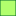

<!doctype html>
<html lang="en">
    <head>
        <meta charset="utf-8">
        <meta http-equiv="X-UA-Compatible" content="IE=edge">
        <meta name="viewport" content="initial-scale=1,user-scalable=no,maximum-scale=1,width=device-width">
        <meta name="mobile-web-app-capable" content="yes">
        <meta name="apple-mobile-web-app-capable" content="yes">
        <link rel="stylesheet" href="css/leaflet.css">
        <link rel="stylesheet" href="css/qgis2web.css"><link rel="stylesheet" href="css/fontawesome-all.min.css">
        <style>
        #map {
            width: "100%";
            height: 595px;
        }
        </style>
        <title></title>
    </head>
    <body>
        <div id="map">
        </div>
        <script src="js/qgis2web_expressions.js"></script>
        <script src="js/leaflet.js"></script>
        <script src="js/leaflet.rotatedMarker.js"></script>
        <script src="js/leaflet.pattern.js"></script>
        <script src="js/leaflet-hash.js"></script>
        <script src="js/Autolinker.min.js"></script>
        <script src="js/rbush.min.js"></script>
        <script src="js/labelgun.min.js"></script>
        <script src="js/labels.js"></script>
        <script src="data/Reservadebiosferatransfronteriza_1.js"></script>
        <script src="data/Reservadebiosferanacionales_2.js"></script>
        <script>
        var map = L.map('map', {
            zoomControl:true, maxZoom:28, minZoom:1
        }).fitBounds([[-20.075326958493214,-82.44742140735268],[2.1013857796933104,-67.7876045551282]]);
        var hash = new L.Hash(map);
        map.attributionControl.setPrefix('<a href="https://www.geogpsperu.com" target="_blank">GEO GPS PERÚ</a> &middot; <a href="https://leafletjs.com" title="A JS library for interactive maps">Leaflet</a> &middot; <a href="https://www.geogpsperu.com">Suyo Pomalía</a>');
        var autolinker = new Autolinker({truncate: {length: 30, location: 'smart'}});
        var bounds_group = new L.featureGroup([]);
        function setBounds() {
        }
        map.createPane('pane_OpenStreetMap_0');
        map.getPane('pane_OpenStreetMap_0').style.zIndex = 400;
        var layer_OpenStreetMap_0 = L.tileLayer('https://tile.openstreetmap.org/{z}/{x}/{y}.png', {
            pane: 'pane_OpenStreetMap_0',
            opacity: 1.0,
            attribution: '',
            minZoom: 1,
            maxZoom: 28,
            minNativeZoom: 0,
            maxNativeZoom: 19
        });
        layer_OpenStreetMap_0;
        map.addLayer(layer_OpenStreetMap_0);
        function pop_Reservadebiosferatransfronteriza_1(feature, layer) {
            var popupContent = '<table>\
                    <tr>\
                        <th scope="row">Nombre:</th>\
                        <td>' + (feature.properties['rbt_nomb'] !== null ? autolinker.link(feature.properties['rbt_nomb'].toLocaleString()) : '') + '</td>\
                    </tr>\
                    <tr>\
                        <th scope="row">Tipo:</th>\
                        <td>' + (feature.properties['rbt_tipzo'] !== null ? autolinker.link(feature.properties['rbt_tipzo'].toLocaleString()) : '') + '</td>\
                    </tr>\
                    <tr>\
                        <th scope="row">País:</th>\
                        <td>' + (feature.properties['rbt_pais'] !== null ? autolinker.link(feature.properties['rbt_pais'].toLocaleString()) : '') + '</td>\
                    </tr>\
                </table>';
            layer.bindPopup(popupContent, {maxHeight: 400});
        }

        function style_Reservadebiosferatransfronteriza_1_0(feature) {
            switch(String(feature.properties['rbt_tipzo'])) {
                case 'Núcleo':
                    return {
                pane: 'pane_Reservadebiosferatransfronteriza_1',
                opacity: 1,
                color: 'rgba(0,102,42,0.648)',
                dashArray: '',
                lineCap: 'butt',
                lineJoin: 'miter',
                weight: 1.0, 
                fill: true,
                fillOpacity: 1,
                fillColor: 'rgba(177,255,109,0.648)',
                interactive: true,
            }
                    break;
                case 'Tampón':
                    return {
                pane: 'pane_Reservadebiosferatransfronteriza_1',
                opacity: 1,
                color: 'rgba(237,71,5,0.648)',
                dashArray: '',
                lineCap: 'butt',
                lineJoin: 'miter',
                weight: 1.0, 
                fill: true,
                fillOpacity: 1,
                fillColor: 'rgba(255,203,153,0.648)',
                interactive: true,
            }
                    break;
                case 'Transición':
                    return {
                pane: 'pane_Reservadebiosferatransfronteriza_1',
                opacity: 1,
                color: 'rgba(255,9,9,0.648)',
                dashArray: '',
                lineCap: 'butt',
                lineJoin: 'miter',
                weight: 1.0, 
                fill: true,
                fillOpacity: 1,
                fillColor: 'rgba(252,180,187,0.648)',
                interactive: true,
            }
                    break;
            }
        }
        map.createPane('pane_Reservadebiosferatransfronteriza_1');
        map.getPane('pane_Reservadebiosferatransfronteriza_1').style.zIndex = 401;
        map.getPane('pane_Reservadebiosferatransfronteriza_1').style['mix-blend-mode'] = 'normal';
        var layer_Reservadebiosferatransfronteriza_1 = new L.geoJson(json_Reservadebiosferatransfronteriza_1, {
            attribution: '',
            interactive: true,
            dataVar: 'json_Reservadebiosferatransfronteriza_1',
            layerName: 'layer_Reservadebiosferatransfronteriza_1',
            pane: 'pane_Reservadebiosferatransfronteriza_1',
            onEachFeature: pop_Reservadebiosferatransfronteriza_1,
            style: style_Reservadebiosferatransfronteriza_1_0,
        });
        bounds_group.addLayer(layer_Reservadebiosferatransfronteriza_1);
        map.addLayer(layer_Reservadebiosferatransfronteriza_1);
        function pop_Reservadebiosferanacionales_2(feature, layer) {
            var popupContent = '<table>\
                    <tr>\
                        <th scope="row">Nombre:</th>\
                        <td>' + (feature.properties['rb_nomb'] !== null ? autolinker.link(feature.properties['rb_nomb'].toLocaleString()) : '') + '</td>\
                    </tr>\
                    <tr>\
                        <th scope="row">Tipo:</th>\
                        <td>' + (feature.properties['rb_tipzo'] !== null ? autolinker.link(feature.properties['rb_tipzo'].toLocaleString()) : '') + '</td>\
                    </tr>\
                </table>';
            layer.bindPopup(popupContent, {maxHeight: 400});
        }

        function style_Reservadebiosferanacionales_2_0(feature) {
            switch(String(feature.properties['rb_tipzo'])) {
                case 'Núcleo':
                    return {
                pane: 'pane_Reservadebiosferanacionales_2',
                opacity: 1,
                color: 'rgba(0,102,42,0.6509999999999999)',
                dashArray: '',
                lineCap: 'butt',
                lineJoin: 'miter',
                weight: 1.0, 
                fill: true,
                fillOpacity: 1,
                fillColor: 'rgba(177,255,109,0.6509999999999999)',
                interactive: true,
            }
                    break;
                case 'Tampón':
                    return {
                pane: 'pane_Reservadebiosferanacionales_2',
                opacity: 1,
                color: 'rgba(237,71,5,0.6509999999999999)',
                dashArray: '',
                lineCap: 'butt',
                lineJoin: 'miter',
                weight: 1.0, 
                fill: true,
                fillOpacity: 1,
                fillColor: 'rgba(255,203,153,0.6509999999999999)',
                interactive: true,
            }
                    break;
                case 'Transición':
                    return {
                pane: 'pane_Reservadebiosferanacionales_2',
                opacity: 1,
                color: 'rgba(255,9,9,0.6509999999999999)',
                dashArray: '',
                lineCap: 'butt',
                lineJoin: 'miter',
                weight: 1.0, 
                fill: true,
                fillOpacity: 1,
                fillColor: 'rgba(252,180,187,0.6509999999999999)',
                interactive: true,
            }
                    break;
            }
        }
        map.createPane('pane_Reservadebiosferanacionales_2');
        map.getPane('pane_Reservadebiosferanacionales_2').style.zIndex = 402;
        map.getPane('pane_Reservadebiosferanacionales_2').style['mix-blend-mode'] = 'normal';
        var layer_Reservadebiosferanacionales_2 = new L.geoJson(json_Reservadebiosferanacionales_2, {
            attribution: '',
            interactive: true,
            dataVar: 'json_Reservadebiosferanacionales_2',
            layerName: 'layer_Reservadebiosferanacionales_2',
            pane: 'pane_Reservadebiosferanacionales_2',
            onEachFeature: pop_Reservadebiosferanacionales_2,
            style: style_Reservadebiosferanacionales_2_0,
        });
        bounds_group.addLayer(layer_Reservadebiosferanacionales_2);
        map.addLayer(layer_Reservadebiosferanacionales_2);
        var baseMaps = {};
        L.control.layers(baseMaps,{'Reserva de biosfera nacionales<br /><table><tr><td style="text-align: center;"></td><td>Núcleo</td></tr><tr><td style="text-align: center;"></td><td>Tampón</td></tr><tr><td style="text-align: center;"></td><td>Transición</td></tr></table>': layer_Reservadebiosferanacionales_2,'Reserva de biosfera transfronteriza<br /><table><tr><td style="text-align: center;"></td><td>Núcleo</td></tr><tr><td style="text-align: center;"></td><td>Tampón</td></tr><tr><td style="text-align: center;"></td><td>Transición</td></tr></table>': layer_Reservadebiosferatransfronteriza_1,"OpenStreetMap": layer_OpenStreetMap_0,},{collapsed:false}).addTo(map);
        setBounds();
        </script>
    </body>
</html>
